磁気リコネクション¶
- 著者
銭谷誠司（国立天文台）
背景¶
磁気リコネクションは、MHD スケールで起きる物理素過程である。ただし、理想 MHD 条件
(1)¶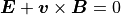
のもとでは磁力線は繋ぎ代わることができない（ Newcomb, 1958 ）。MHD リコネクションではオームの法則に電気抵抗項を追加して磁力線の繋ぎ代えを許している。
(2)¶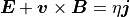
電気抵抗効果を組み入れた MHD 方程式系を抵抗性磁気流体（resistive MHD）方程式系と呼ぶ。
磁気リコネクションの resistive MHD シミュレーションは、我が国の鵜飼ら（ Ugai & Tsuda, 1977 ）が初めて計算を行なって以来、世界中で活発に研究されているテーマである。現在、リコネクションの非線形発展は、 (2) 式の電気抵抗  の設定方法によって大きく異なることがわかっている。
の設定方法によって大きく異なることがわかっている。
（１）抵抗 が空間的に一様であれば、遅い Sweet--Parker 型リコネクションが起きる。そして、系のサイズが大きな場合には、磁気島（プラズモイド）が多数現れるプラズモイド型リコネクションに遷移する（ Loureiro et al., 2007 ; Bhattacharjee et al., 2009 ）。
（２）抵抗 が空間的に局在化しているとリコネクションジェットの両側にスローショックを伴うPetschek 型リコネクションが起きる（ Petschek, 1964 ）。また、例えば 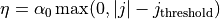 のように電気抵抗を物理量の関数（電流密度  や電流強度 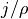 を用いるものが多い）にする流儀もあって、総称して異常抵抗モデルと呼ぶ。電流が強い領域では MHD で記述できない物理が作用して抵抗も強くなる、と仮定するわけだが、その際は関数形を正当化する必要がある。異常抵抗モデルでも、非線形発展の結果として抵抗の大きな領域が局在化し、Petschek リコネクションになることが多い（ Scholer 1989 ; Ugai 1992 ）。
や電流強度 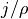 を用いるものが多い）にする流儀もあって、総称して異常抵抗モデルと呼ぶ。電流が強い領域では MHD で記述できない物理が作用して抵抗も強くなる、と仮定するわけだが、その際は関数形を正当化する必要がある。異常抵抗モデルでも、非線形発展の結果として抵抗の大きな領域が局在化し、Petschek リコネクションになることが多い（ Scholer 1989 ; Ugai 1992 ）。
課題設定¶
Zenitani & Miyoshi, 2011 （以降 ZM11 と呼ぶ）に倣って、座標系の原点付近にリコネクション点を置く。プラズマと電磁場の初期設定は以下の通りである。
(3)¶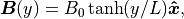
(4)¶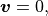
(5)¶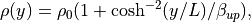
(6)¶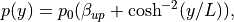
である。磁場の向きが反転する真ん中領域では磁気圧が働かない。そこでプラズマを真ん中に多めに入れて、全体の圧力バランスが成り立つようにしている。 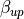 は、プラズマベータ（磁気圧に対するプラズマ圧力の比）を
(7)¶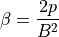
上流領域で評価したものある。簡単のため、系全体で温度（ 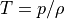 ）を一定にしている。規格化は次の通り：
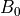
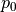
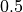

こうすると上流アルヴェン速度が 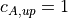 、典型距離をアルヴェン速度で横切るのにかかるアルヴェントランジット時間が 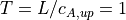 となるので、議論が簡単になる。電気抵抗は、次の式のように原点付近に局在化させる。
(8)¶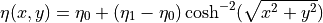
デフォルト値は 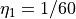 で、背景にも 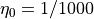 の弱い抵抗を入れている。背景抵抗をゼロにすると、MHD の不連続面をよりシャープに解けるようになるだろう。反面、高解像度の数値解法では、磁気島（プラズモイド）内の乱流磁場の中に、グリッドスケールの数値振動が混じってしまうこともある。 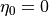 にする場合は、念のため、計算後に面内磁場を確認してほしい。
局在化した抵抗のため、放っておいてもリコネクションは起きる。しかし今回は磁場に擾乱を加えて早くリコネクションを起こすことにしよう。次の擾乱ポテンシャルは原点近傍に の 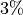 程度の弱い擾乱を追加する。
(9)¶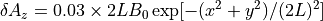
さらに境界条件を工夫して、系の第一象限のみを解く。9-wave 法（hyperbolic divergence cleaning 法; Dedner 法）の仮想ポテンシャルψの境界条件は間違えやすいので注意する。
計算領域のサイズは 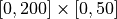 とした。これは ZM11 とほぼ同じで、解像度を 30 → 20 に変更している。
結果¶
図は t=250 でのプラズマの速度成分 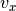 をプロットしたものである。赤いアウトフロー領域の上下には、Petschek リコネクション（ Petschek, 1964 ）特有のスローショックが出来ている。これに加えて、あちこちにシャープな構造が見える。
{kind=link}
結果を下の図と見比べてみよう。この図は、ZM11 のサマリー図に、その後のアップデート（ Zenitani, 2015 ）を反映させたものである。
{kind=link}
例えば、 アウトフロー図 の 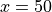 あたり（ サマリー図 の#7）に見える構造は、右側を上流とするスローショックである。この衝撃波は、音速程度の速度で磁気島（プラズモイド）が運動する時、後ろ側によく現れる。一方、航空工学では、飛行機の速度が音速の 0.8 倍を超えたあたりから、翼の上面の後ろ側に縦衝撃波が立つことが知られていて、これを recompression shock と呼ぶ。プラズモイドを翼面に見立てると、今回のスローショックは recompression shock に対応することがわかるだろう。また、 アウトフロー図 をよく見ると、 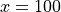 あたりにも衝撃波が立っている。プラズモイドの速度が超音速に達すると前面にも衝撃波が立ち、合計４本のスローショックが現れるわけである。衝撃波が交差するところにできる複雑な構造にも注目してみよう。
{kind=link}
図 は、Petschekスローショックの t=250, x=40 の断面で を示したものである。参考のため、ZM11 のデータと三好先生のコード、そして、公開 HLLD コード OpenMHD 3 の計算結果も示している。 CANS+ はスローショックを少ないグリッド数で解いているが、速度成分 がオーバーシュートしている。これは高精度解法に特有の数値振動だろう。また、 が 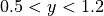 で揃っていないのは、アウトフロー領域内を飛び交う微小波を見ているからである。この近くの vyの２次元プロファイル には斜めの波面が見えていて、Petschek スローショックで繰り返し反射しているように見える（ Tanuma & Shibata, 2007 ）。微小波の成因は、グリッドとの関係から判断して数値的なものだと思うが、現時点ではわからない。そして、元が物理振動であれ数値振動であれ、 CANS+ は高次精度なので波を減衰させないのだろう。
{kind=link}
Footnotes
また、磁気島（プラズモイド）の先頭側にも複雑な構造が現れる。 アウトフロー図 からはよくわからないので、表示領域やカラーバーを調整して サマリー図 の #10 に相当するものを探してみてほしい。 下の図 は、ZM11 のきっかけとなった 相対論 MHD シミュレーション（ Zenitani et al. 2010）の該当部分である。 同じ現象が綺麗に見えているので、これを使って説明することにする。 シミュレーションの初期設定では、圧力バランスを満たすために 真ん中にプラズマ密度の高い領域（プラズマシート）を設置していた。 そのため、リコネクションジェットのプラズマ流は、 プラズマシートを避けて上下を流れてゆく（オレンジ色の矢印）。 ジェット先端からは「FS」で示すように斜め衝撃波が伸びていて、 その先にダイアモンドの形をした構造が連なっている。 この構造を ショックダイアモンド と呼ぶ。
{kind=link}
プラズモイド先端部の構造（ Zenitani et al. 2010 ）¶
ショックダイアモンドは超音速流に特有の構造で、 航空・ロケット分野でよく知られている。 下の図 のように ジェットエンジン（灰色）から高温・高速のガスが後方に吹き出しているとしよう。 ジェット内の圧力 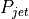 と外気の圧力 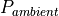 はあまり変わらないとする。 ジェットが排出口から外に出ると、その情報はジェット内を音速で伝わって、 外気との圧力差を調整しようとする。 しかし、排出速度がジェット内の音速を超えていると、 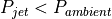 の場合（過膨張; overexpanded と呼ぶ）は衝撃波が、 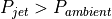 の場合（不足膨張; underexpanded と呼ぶ）は膨張波（希薄波）が 斜めに伝わっていく。 ジェットと外気との境界は自由境界であるから、 反対側に到達した衝撃波は膨張波、膨張波は圧縮波（衝撃波）となって反射し、 このサイクルを繰り返すことで、ダイアモンド状の領域を作っていくわけである。 プラズモイドの先端 では右から左に入ってくるプラズマシートが、 (a) 過膨張タイプの 超音速ジェット に対応していることがわかる。 と の差が大きな場合は構造がさらに複雑になるが、 高速流体力学・圧縮性流体力学の教科書（例えば Shapiro 1953 など）を起点に 調べていただければ良いだろう。オンラインでは、フロリダ国際大学の 解説ページ も参考になる。 また、この分野の日本語の入門書としては 松尾 (1994) をお薦めする。
{kind=link}
せっかくなので、ショックダイアモンドの実例をいくつか紹介しよう。アメリカ空軍の超音速偵察機 SR-71（ブラックバード） はマッハ 3.2 で飛ぶことができたが、 BBC の特集ページ （特に 2:50 あたり）の映像を見ると、エンジン後方に超音速流に伴うショックダイアモンドが見えている。このショックダイアモンドは リアリティを追い求める分野 （音が出るので注意）でも再現されている。次世代戦闘機 F-35 に搭載予定の超音速エンジンも 綺麗なダイアモンド を生成する。もちろん、戦闘機だけではなく、ロケットエンジン（1, 2 ）や 映画の射撃シーン でもショックダイアモンドを見ることができる。
ショックダイアモンド構造は、活動銀河核から吹き出す宇宙ジェットともよく似ている。超音速流の図 を 90 度回転させて、 ジェット課題 の図と見比べてみよう。コクーンの中を超音速で突き抜けるジェットの中には、斜めの構造が見えていないだろうか？ 少し考えると背景物理が共通であることがわかるだろう。ちなみに宇宙ジェット業界では、圧縮部分の斜め衝撃波を reconfinement shock あるいは recollimation shock と呼んでいる。観測的にもジェットの中に小さな塊（「ノット」と呼ぶ）構造が見えることが知られており（例えば Godfrey et al., 2012 ）、reconfinement/recollimation shock 下流側のダイアモンドに相当するのではないかと言われている。
まとめ¶
磁気リコネクションのアウトフロージェットやプラズモイドの運動に伴って、周辺にさまざまな衝撃波が発生する。このような構造を解くためには、衝撃波に対応した Godunov 型の数値解法が有効である。 CANS+ は、その中でも最も優れた HLLD 法（ Miyoshi & Kusano, 2005 ）を採用しているうえ、時間精度・空間精度も高いため、これまで解けなかった新しい構造も見える。その際、コードの特性を考慮して、数値的なものと物理的に意味のある結果を切り分け、後者を議論することが大切である。シミュレーション系で見える構造の中には、航空・ロケットや宇宙ジェットと共通なものもあり、物理法則の普遍性を体感することができるだろう。
謝辞¶
この課題のコードは、2014年のサマースクール期間中に柴山さん（名大）、岩本さん（茨城大）、河村さん（京大）、阪本さん（東北大）が作成して下さったものである。また、衝撃波問題も、柴山さんが期間中に報告して下さったものである。